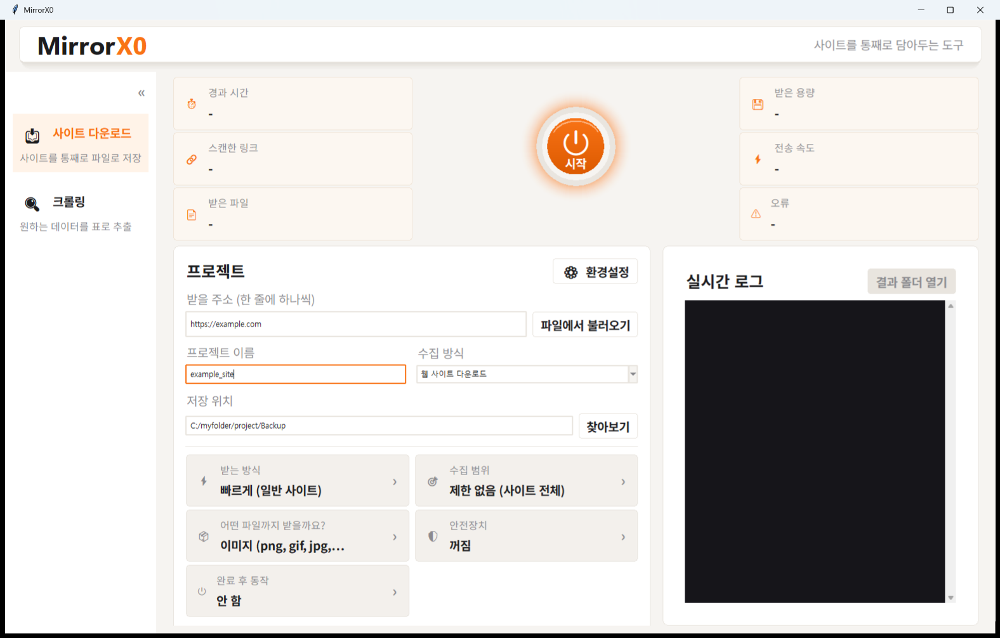
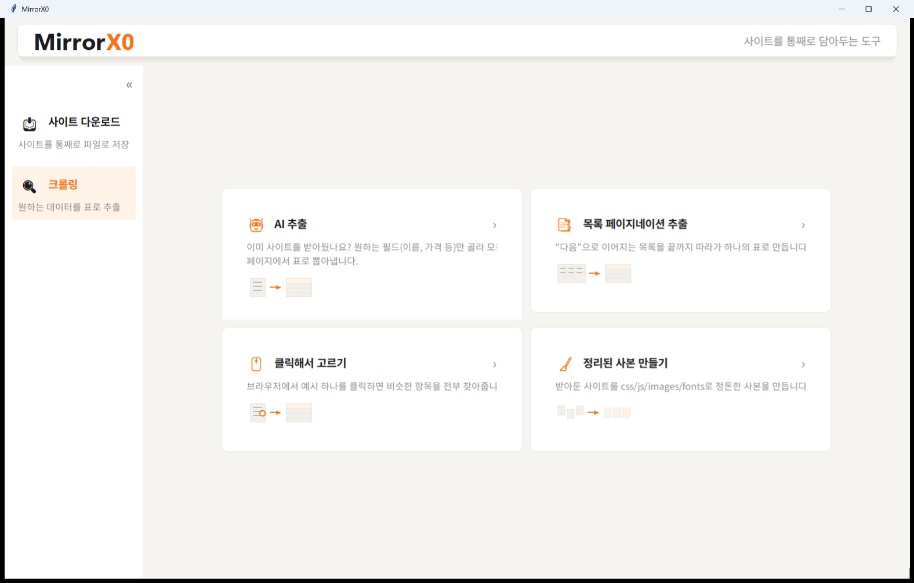
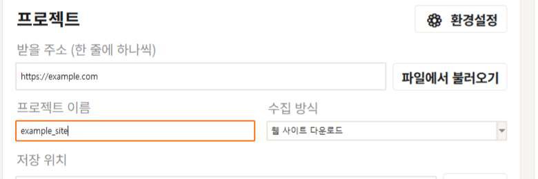
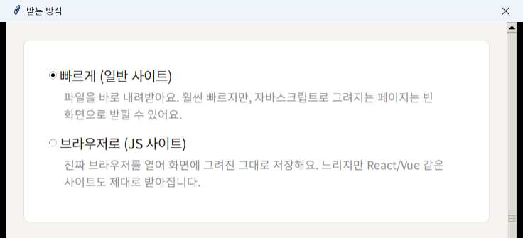
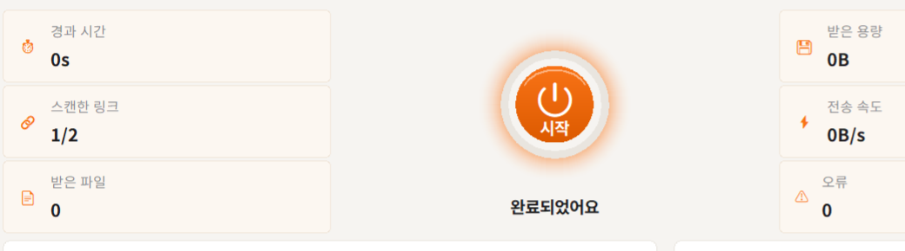

HTTrack이 받지 못하는 최신 React/Vue 사이트도 크롬 브라우저 렌더링을 통해 완벽하게 복제합니다. 인터넷 없이도 실제처럼 작동하는 사본을 만들어보세요.

단순한 HTML 다운로더가 아닙니다. 최신 웹 환경에 맞게 완전히 새롭게 설계되었습니다.
HTTrack으로 받으면 빈 껍데기만 나오나요? MirrorX0는 내부적으로 실제 크롬 브라우저를 구동하여 스타일과 이미지가 포함된 '진짜 화면'을 캡처합니다.
평소 쓰시던 크롬이나 엣지에 로그인된 세션을 그대로 가져옵니다. 로그인이 필요한 비공개 페이지나 포럼도 손쉽게 크롤링할 수 있습니다.
"레시피만 뽑아줘", "광고는 빼줘" 같이 자연어로 명령하세요. 전체 사이트에서 원하는 데이터만 쏙쏙 뽑아 엑셀이나 CSV로 정리해 드립니다.
가볍고 빠른 수집이 필요할 땐 'HTTrack 엔진'으로, 복잡한 최신 사이트일 땐 'Smart Crawl'로. 버튼 하나로 최적의 모드를 골라 쓰세요.

| 기능 | 기존 HTTrack | MirrorX0 |
|---|---|---|
| React, Vue 등 SPA(자바스크립트) 사이트 복제 | ✕ 불가 (빈 화면) | ✓ 완벽 지원 (크롬 렌더링) |
| 로그인 세션 / Cloudflare 우회 | ✕ 복잡한 쿠키 설정 필요 | ✓ 로컬 브라우저 세션 자동 연동 |
| AI 기반 데이터 추출 (문장 명령) | ✕ 불가 | ✓ 자연어 필터링 및 엑셀 저장 |
| 고속 정적 파일 다운로드 | ✓ 빠름 | ✓ 동일 엔진(GPLv3) 사용으로 빠름 |
| 사용자 인터페이스 (UI) | 오래된 윈도우 98 스타일 | 최신 데스크톱 모던 UI |
실제 프로그램 화면 그대로입니다. 설치 후 이 순서 그대로 따라 하면 됩니다.
받고 싶은 웹사이트 주소를 넣고, 프로젝트 이름을 정해줍니다. 주소를 넣는 순간 가운데 시작 버튼이 눌러지도록 밝아집니다.

정적인 일반 사이트는 '빠르게', React/Vue처럼 자바스크립트로 그려지는 사이트는 '브라우저로'를 고릅니다. 어떤 걸 골라야 할지 헷갈리면 설명을 그대로 읽고 고르면 됩니다.

시작 버튼을 누르면 실시간 로그와 진행률이 표시되고, 끝나면 "완료되었어요"와 함께 결과 폴더를 바로 열 수 있습니다.

Windows 10 / 11 전용 데스크톱 애플리케이션입니다.
↓ Windows용 다운로드서명되지 않은 배포판이라 설치 시 Windows SmartScreen 경고가 뜰 수 있습니다. '추가 정보' → '실행'을 누르면 설치가 진행됩니다. SHA-256 체크섬 확인
이전 버전 다운로드네, MirrorX0는 오픈소스로 누구나 무료로 사용할 수 있습니다.
네, ⚙ 환경설정(또는 스마트 크롤링 옵션)에서 '내 브라우저 로그인 사용'을 켜시면, 크롬이나 엣지에 이미 로그인해 둔 상태를 그대로 써서 로그인이 필요한 페이지도 받을 수 있습니다. 지금 받는 사이트의 쿠키만 사용하고 다른 사이트 것은 읽지 않습니다.
기본적으로 내 PC의 '다운로드\MirrorX' 폴더 안에, 프로젝트 이름으로 만든 폴더에 저장됩니다. 화면의 '저장 위치' 항목에서 원하는 경로로 언제든 바꿀 수 있습니다.
현재 MirrorX0는 Windows 환경에 최적화되어 개발되었습니다. 맥이나 리눅스 지원은 향후 버전에서 고려 중입니다.
사이트를 받는 기능(사이트 미러링, 스마트 크롤링) 자체는 어떤 데이터도 외부로 보내지 않고 내 PC 안에서만 동작합니다. 브라우저 로그인 연동도 지금 받는 사이트의 쿠키만 로컬에서 사용합니다. 다만 AI 데이터 추출 기능을 쓰면, 추출을 요청한 페이지 내용이 사용자가 직접 등록한 API 키를 통해 선택한 AI 사업자(Anthropic/OpenAI/Google 중 택1)에게 전송됩니다. API 키는 내 PC에만 저장되고, AI 기능을 쓰지 않으면 이 전송 자체가 일어나지 않습니다.